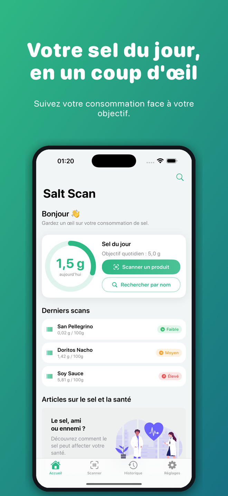
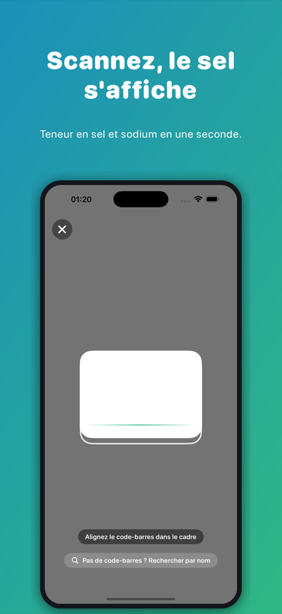
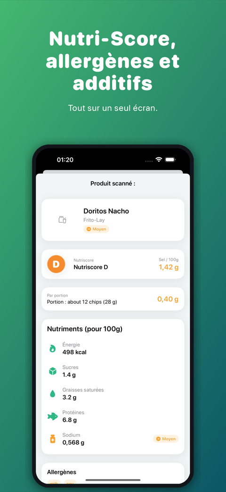
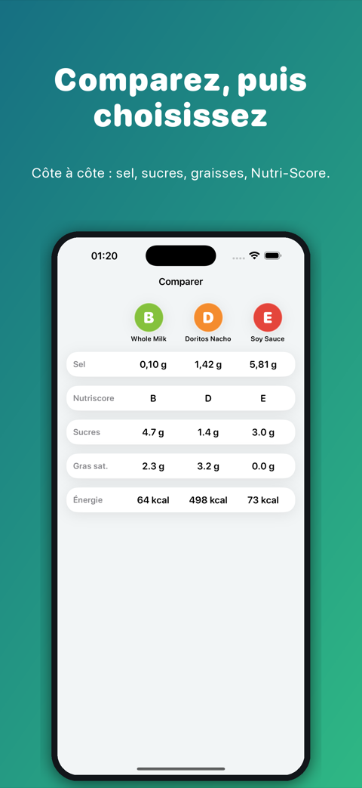
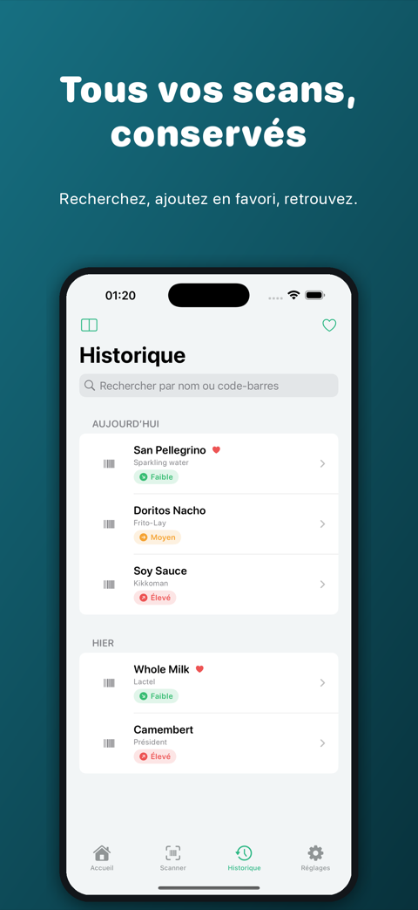

Salt Scan vous dit combien de sel et de sodium contient un produit avant de le manger. Scannez le code-barres, lisez les chiffres en une seconde et suivez votre consommation quotidienne par rapport à votre objectif.

Le chiffre qui compte, directement dans le rayon.
Scannez n’importe quel code-barres : teneur en sel et en sodium immédiate, avec un repère clair Faible / Moyen / Élevé. Le repère suit les seuils du feu tricolore britannique : jusqu’à 0,3 g de sel pour 100 g, c’est faible ; au-delà de 1,5 g, c’est élevé.
Lisez les chiffres comme votre pays les indique : sodium en mg ou sel en g, selon votre région. Vous pouvez changer dans les Réglages.
Ajoutez une portion à votre journal et regardez l’anneau de sel se remplir. Ouvrez n’importe quel jour pour changer une quantité, la déplacer ou la supprimer.
Enregistrez une demi-portion, deux portions ou le nombre exact de grammes que vous avez mangés. Salt Scan calcule le sel pour vous.
Placez des produits l’un à côté de l’autre, sodium, sucres, graisses saturées et Nutri-Score, et choisissez la meilleure option.
Enregistrez si vous le souhaitez le sodium des portions de votre journal dans l’app Santé. C’est désactivé par défaut, et Salt Scan ne lit jamais vos données Santé.
Pas de code-barres sous la main ? Recherchez le produit par son nom depuis l’Accueil.
Vos scans sont gardés dans un historique où vous pouvez chercher, avec des favoris pour les produits que vous rachetez.
Calories, sucres, graisses saturées, protéines, allergènes et additifs sur le même écran que le sel.
Du code-barres à votre total du jour.




Les données produits proviennent d’Open Food Facts, la base alimentaire ouverte entretenue par des bénévoles dans le monde entier. L’exactitude dépend des contributions : vérifiez toujours l’étiquette avant toute décision médicale.
Aucune pub, aucun compte, aucun traçage.